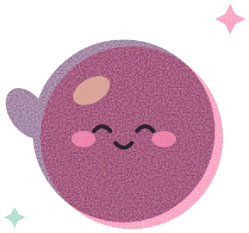
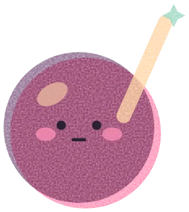
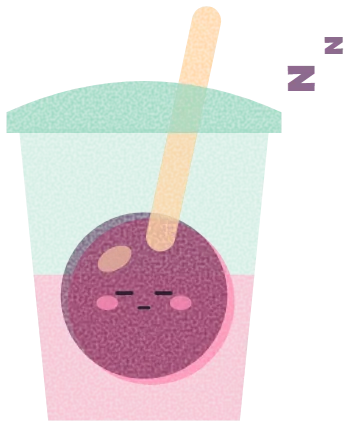
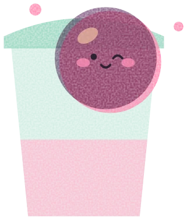
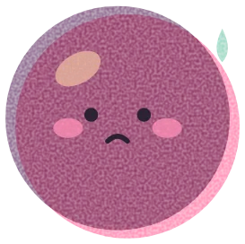

Открыто до 22:00 · 2 точки в Гродно
Пузырьки, которые поднимают настроение
Собери свой бабл-ти из 40 000 сочетаний — или возьми хит недели. Заберёшь за 5 минут, а Бурба подпишет стакан.
40 000сочетаний
в конструкторе
в конструкторе
5 минот заказа
до стакана
до стакана
4 часаживёт свежая
тапиока
тапиока

Конструктор
Собери свой бабл-ти
1Основа
2Вкус
3Топпинги до трёх
4Сладость, лёд и объём

Бурба колдует твой напиток стакан наполняется вживую при каждом выбореМеню
Хиты Бурбалки
Карта лояльности
Седьмой — в подарок
Каждый стакан — пузырёк в карте. Собери семь, и Бурба угостит. Карта живёт в Telegram, ничего скачивать не нужно.
Карта «7 пузырьков» 4 из 7
Из чего тапиока
Варим каждые 4 часа
- Крахмал маниоки, тростниковый сахар и вода — без красителей
- Свежая партия каждые 4 часа: не успела — выбрасываем
- Попинг-боба с настоящим соком, желе на агар-агаре
Где мы
Две точки в Гродно


